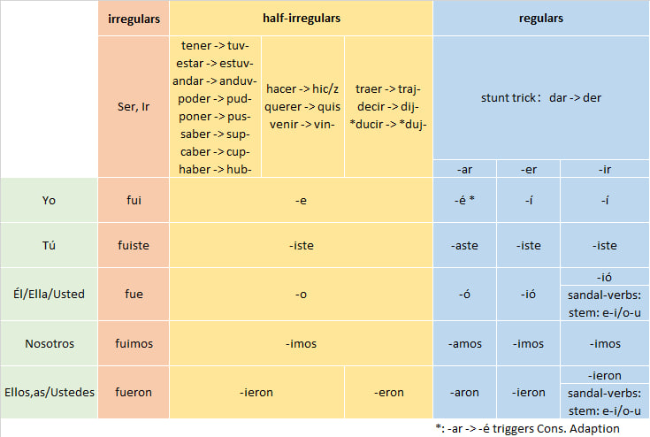

Pretérito (Simple Past)
In this chapter we learn another tense regarding the past — Simple Past (Pretérito). It corresponds to the "did" type expressions in English past tense.
- Jugué al fútbol esta mañana. (I played football this morning.)
The biggest difference between Pretérito and Imperfecto learned in the previous chapter is that the expression of this tense contains information about the completion of the action. Because the pretérito tense explicitly contains information about the completion of the action, in actual use, its grammatical function overlaps with the Present Perfect (have done). That is, we can completely use the Simple Past to replace the expression of the Present Perfect. This is especially true in spoken language.
We will first learn the "Basic Component" — pretérito verb conjugation. After mastering the basic component, we will learn the use of pretérito.
Pretérito Verb Conjugation
The regular verb conjugation of Pretérito is as follows:
| -ar | -er/-ir | |
|---|---|---|
| Yo | -é | -í |
| Tú | -aste | -íste |
| Él/Ella/Usted | -ó | -ió |
| Nosotros, as | -amos | -imos |
| Ellos, as/Ustedes | -aron | -ieron |
Unlike presente (Present Indicative) conjugation where -ar/-er/-ir verbs use three different sets of endings respectively, pretérito conjugation merges -er and -ir verbs together. Also note that the nosotros conjugation of pretérito is the same as the presente conjugation (for -ar and -ir verbs).
Note that the yo conjugation replacement of -ar verbs (-ar -> -é) is a cross-group replacement (a/o/u group -> e/i group), which may trigger Consonant Passive Adaptation (e.g., tocar -> toqué).
Pretérito Matrix
Pretérito also has a large number of irregular or "semi-regular" verbs. I condense all the conjugation rules of pretérito into the following Simple Past Conjugation Matrix. As long as you remember this "Pretérito Matrix", you will remember all the conjugation rules of pretérito. This is the second "Matrix" of this tutorial.

1. Completely Irregular Verbs
There are only two completely irregular verbs in the Pretérito tense, ser and ir, and they share the same set of conjugations:
| Ser/Ir | |
|---|---|
| Yo | fui |
| Tú | fuiste |
| Él/Ella/Usted | fue |
| Nosotros, as | fuimos |
| Ellos, as/Ustedes | fueron |
2. Semi-regular Verbs (U/I/J-Groups)
U/I/J-Groups are three groups of verbs, their pretérito conjugation rules can be summarized into two:
Stem transformation;
Use a set of endings (suffix) different from standard conjugation, and do not distinguish between -ar/-er/-ir.
Stem transformation is shown in the table below:
| U-group | Stem Transform | I-group | Stem Transform | J-group | Stem Transform |
|---|---|---|---|---|---|
| estar | estuv- | hacer | hic/z- | traer | traj- |
| haber | hub- | querer | quis- | decir | dij- |
| tener | tuv- | venir | vin- | *ducir | *duj- |
| andar | anduv- | ||||
| poder | pud- | ||||
| poner | pus- | ||||
| saber | sup- | ||||
| caber | cup- |
Note that "ducir" in the table means that ducir should be understood as a base word, i.e., all derivatives of ducir (verbs conforming to the \ducir pattern) should be classified as J-group.
The unified endings following the transformed stem:
| Pretérito Endings | Example: estar | hacer | decir | |
|---|---|---|---|---|
| Yo | -e | estuve | hice | dije |
| Tú | -iste | estuviste | hiciste | dijiste |
| Él/Ella/Usted | -o | estuvo | hizo | dijo |
| Nosotros, as | -imos | estuvimos | hicimos | dijimos |
| Ellos, as/Ustedes | -ieron (but j swallows i) | estuvieron | hicieron | dijeron |
Note that the Él conjugation for hacer triggered Consonant Passive Adaptation. You can completely consider that hizo is not some "irregular conjugation", but fully conforms to the U/I/J-Groups rules, only triggering a more basic principle — Consonant Passive Adaptation.
3. Sandal-verbs
In Presente verb conjugation, there is a class of boot verbs that undergo vowel substitution (stem-change). Correspondence in pretérito is sandal verbs. In Sandal verbs, only the third person (singular and plural) conjugations undergo vowel substitution, i.e., the conjugations involved are the yellow parts in the figure below — looking like a sandal, so called sandal verbs.
| Yo | Nosotros |
| Tú | Vosotros |
| Él/Ella/Usted | Ellos/Ellas/Ustedes |
So what is the relationship between sandal-verbs and boot-verbs? Sandal-verbs are actually -ir boot-verbs excluding those belong to U/I/J-Groups. The latter actually only has 2 basic words (venir/decir) and all derivatives derived from these 2 basic words.
The stem-change of Sandal-verbs is also simpler, no vowel fission, only two simple substitutions (both strong vowels weakening to weak vowels):
e -> i
o -> u
The following table lists the pretérito conjugation of common sandal-verbs, where o->u group includes all basic words of this group (others are all derivatives).
| e->i Verbs | Él/Ella Conjugation | Ellos/Ellas Conjugation | o->u Verbs | Él/Ella Conjugation | Ellos/Ellas Conjugation |
|---|---|---|---|---|---|
| pedir (ask) | pidió | pidieron | dormir (sleep) | durmió | durmieron |
| despedir (fire/bye) | despidió | despidieron | morir (die) | murió | murieron |
| medir (measure) | midió | midieron | |||
| seguir (follow/continue) | siguió | siguieron | |||
| conseguir (get) | consiguió | consiguieron | |||
| sentir (feel) | sintió | sintieron | |||
| mentir (lie) | mintió | mintieron | |||
| divertir(se) (amuse) | divirtió | divirtieron | |||
| preferir (prefer) | prefirió | prefirieron | |||
| sugerir (suggest) | sugirió | sugirieron | |||
| repetir (repeat) | repitió | repitieron | |||
| servir (serve) | sirvió | sirvieron | |||
| vestir (dress) | vistió | vistieron | |||
| elegir (choose) | eligió | eligieron | |||
| freír(fry) | frio | frieron | |||
| reír(laugh) | rio | rieron | |||
| sonreír(smile) | sonrio | sonrieron |
Note that for the e in the last three rows, after being replaced by i, it collapses with the i in the ending (ii -> i).
To demonstrate that the usage of derivatives is always the same as the primitive word, the table lists two pairs of "primitive word - derivative": pedir and despedir, seguir and conseguir. But these basic derivatives are by no means limited to these few, such as repetir and competir. There are also words that formally belong to \pedir but are not actually derivatives of pedir, such as expedir and impedir, but as long as they formally conform to the feature of *pedir, their conjugation is the same as pedir*.
After all the above rules are executed, the rest are standard conjugation rules according to endings of -ar and -er/-ir groups. However, in the "regular conjugation" section, there is a verb that needs to use the "Stunt Trick" first to become a "regular verb": dar -> der, and then perform standard -er/-ir conjugation based on der, getting di/diste/dio/dimos/dieron.
Note: dar (after being transformed into der) and ver conjugation, because not wearing stress marks on i or o like in the standard conjugation table, sometimes are also classified as "irregular conjugation", but in fact "not wearing stress mark" is not irregular at all. Because the stress of these three words di/diste/dio naturally falls on di, diste, dio, the stress mark is completely redundant (whether wearing it or not does not affect its stress position). This brings up the stress mark rule we mentioned before again: stress marks are used to indicate "non-standard stress" — appearing only on those stressed syllables whose stress position is inconsistent with the standard stress position.
We list the Simple Past Conjugation Matrix below again, and review the usage of "Pretérito Matrix".
To get the Simple Past Conjugation of any verb, we only need to execute the logic of "Pretérito Matrix" from left to right:
First, if it is ser or ir, use irregular conjugation directly (fui/fuiste/fue/fuimos/fueron);
Then see if this word belongs to U/I/J-groups (total 14). If so, follow the conjugation rules of U/I/J-groups: first perform stem substitution, then do unified ending substitution. But note that the j at the end of the stem of J-group will swallow the i of -ieron, so actually the Ellos conjugation ending of J-group is eron.
Then if we need the third person (El or Ellos) conjugation, and this word belongs to sandal-verb, then we execute stem-change: e -> i or o -> u;
Finally, we execute the ending replacement of regular verb conjugation, but in the process of -ar ending replacement for yo conjugation (ar -> é), Consonant Passive Adaptation may be triggered.
Usage Scenarios of Pretérito
1. English "did" type past tense
Pretérito is actually the precise correspondent of the English "did" type past tense (excluding "was+adj" past tense or "used+to" structure). Note that the English past tense is a bit "chaotic": "was+adj" expressions and "did" expressions are both classified as past tense. But logically, "was+adj" expression is closer to the expression logic of past continuous, both describing a continuous state in the past. This inconsistency between "morphological tense" and "logical tense" in English is "corrected" in Spanish: past tense is divided into two, imperfecto (imperfect past) describes "background/unbounded" "was+adj" and "was+doing", while pretérito only corresponds to the "did" type past tense in English. Specifically, the "did" type past tense in English describes an action completed in the past time, which is exactly the standard usage scenario of Spanish pretérito tense.
| Spanish Pretérito | English "did" Past Tense |
|---|---|
| Comí. | I ate. |
| ¿Comiste? | Did you eat? |
| Vi esta película. | I watched this movie. |
| ¿Viste esta película? | Did you watch this movie? |
Pretérito can be used in conjunction with imperfecto to express the "interaction relationship" of two actions:
Yo dormía, cuando mi madre llamó. (I was sleeping when my mother called me.)
2. English Present Perfect ("have done")
But precisely because pretérito tense (and English "did" past tense) contains information about the completion of the action, it actually overlaps in function with the Present Perfect (corresponding to English "have done"). This is similar to English: English "did" past tense also has some overlap with Present Perfect (have done), and in actual use, simple past (I did something) is often used to replace Present Perfect (I have done something).
In actual use, if you want to further emphasize the completeness of this action, you can add a ya (=already) to strengthen the tone:
| Spanish Pretérito | English did | Equivalent English have done |
|---|---|---|
| Ya comí. | I ate already (so I don't want to eat again). | I have eaten. |
| Ya vi esta película | I watched this movie already. | I have watched this movie. |
Corresponding to ya, there are also todavia no (not yet) used for negation and alguna vez (ever) used for questioning:
| Spanish Pretérito | English did | Equivalent English have done |
|---|---|---|
| Todavía no comí. | I didn't eat yet. | I have not eaten. |
| ¿Alguna vez viste esta película? | Did you ever watch this movie? | Have you watched this movie? |
3. Time-bounded "was+adj" state
Note that pretérito cannot correspond to "was+adj" type past tense at all, but when pretérito is used to describe past states, it usually means that this state has a clear time boundary.
| Imperfecto v.s. Pretérito | English | Note |
|---|---|---|
| Yo estaba enfermo ayer. | I was sick yesterday. | Only emphasizes being sick yesterday, no start or end info, today's situation unknown |
| Yo estuve enfermo ayer. | I was sick yesterday. | "I was sick" is a historical event (contained within the time boundary of ayer), already recovered today |
Note that the English translation corresponding to Spanish imperfecto expression and pretérito expression in the table above is exactly the same, which means the difference in information contained in these two expressions disappears in English translation (must be inferred from context).
Imperfecto v.s. Pretérito
Some verbs describe "state" in Imperfecto tense, while describing "change of state" or "execution of action" in Pretérito tense, and this difference actually leads to semantic changes:
| Verb | Imperfecto (State) | Pretérito (Action/Change) | Logical Difference |
|---|---|---|---|
| conocer | knew (know) | met (meet for the first time) | know vs. became known state |
| saber | knew (know fact) | found out (learn/discover) | understand vs. moment of obtaining info |
| poder | could (capable) | managed to / succeeded | capable vs. really did it |
| querer | wanted (want) | tried (attempted) | mental activity vs. put into action |
| no querer | didn't want | refused | not in the mood vs. rejected directly |